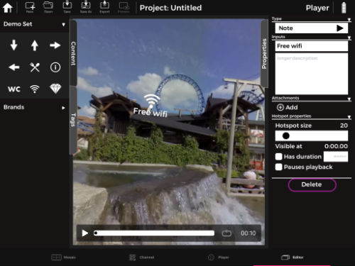

11. Editor
The Editor tab is a feature in the Enterprise version of the LiveSYNC app. Users who don't have the Enterprise version do not have the Editor tab and should skip this chapter.

Creating/Opening a project¶
The Editor is a tab in the controller device, which provides persistence for tags. You can mark points-of-interest with simple passive tags or add interactive (selectable) hotspots. Such configurations can be saved as projects and used in presentations. They can also be opened again for editing, or exported as a report and sent to a colleague.
(1) Navigate to the Editor View
(2) Tap [New] and select <Create New Project> to create a project or [Open] to load an existing project.
Tip
Remember to tap [Save] to keep changes.
(3) Drag a photo/video to presentation area to start adding annotations to the project.
Adding/editing/removing annotations¶
Navigate to Editor view and create/open a project to add and edit annotations.
(1) Select and drag a new tag.
Tap Tags tab and select the tag you wish to add to a presentation by long press and release on presentation content.
Tip
You can later long press on the added tag and move around to adjust the position. Properties list to the newly added hotspot will be shown automatically on the right side of the screen.
(2) Use Note type, and edit text, size, visibility, tag size, etc.
From the settings, you can choose the type of Tag, add title and description, you can even add attachments and adjust the size of tag using the slider indicated as "Hotspot size".
After adding tags, remarks and notes make sure you press the Save button by providing the project name to reuse the project and export it later.
(3) Tap [Delete] from properties list to remove a hotspot

If you wish to delete the added tag, select the tag by tapping it and tap "Delete" button from the properties window seen on the right side.
Using custom annotation icons¶
- On your PC/MAC, create a set of custom PNG images.
- Put them in a folder named as "hotspot_[name]"
- Copy the folder to tablet via iTunes application and pull-to-refresh Tags list.
Tip
Use 32-bit PNG images (with alpha channel) for transparent icon background.
Detailed tutorial on tags and hotspots is discussed on chapter 9.
Exporting presentation content¶
After adding hotspot make sure you press save icon and switch to Editor tab if tags (hotspots) are added on player mode.
Drag the saved content to center labeled with “Drag content here” on Editor tab. You can add tags and also add note, title and description and even adjust size of tag on editor mode by simply tapping the added tag on the content. An editor window will appear on the right side of the screen.
If you want to export the content with all remarks, notes and tags simply press Export 
from top menu and Document details dialog view will appear, give document title as file name and other optional fields if needed then press OK. LiveSYNC will take snapshots and convert that pdf and will display the pdf preview for you with an option to print, save, mail and share on social media.
Note
LiveSYNC projects are saved in JSON format. You have access to them directly by using iTunes or you can send them through e-mail by using the export feature in LiveSYNC.
How to copy saved project to another director iPad?¶